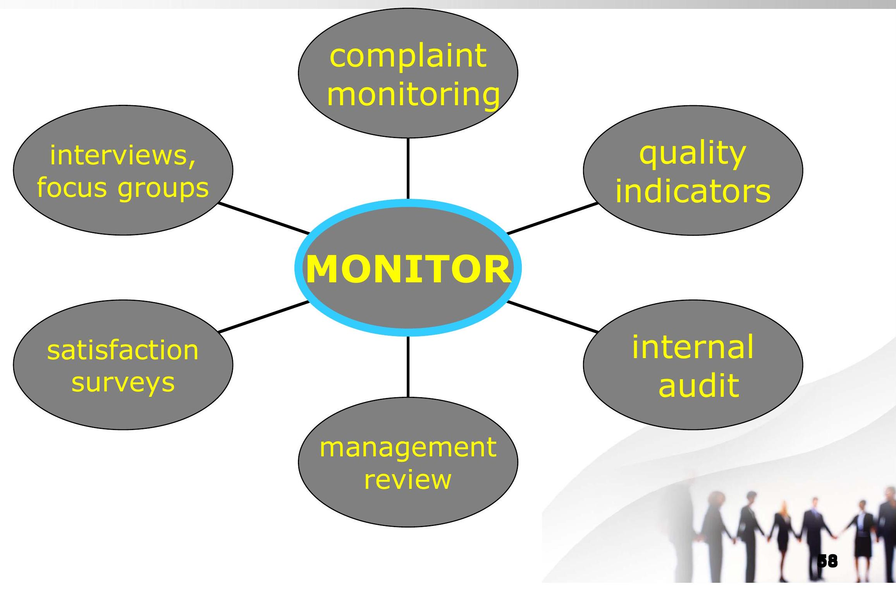
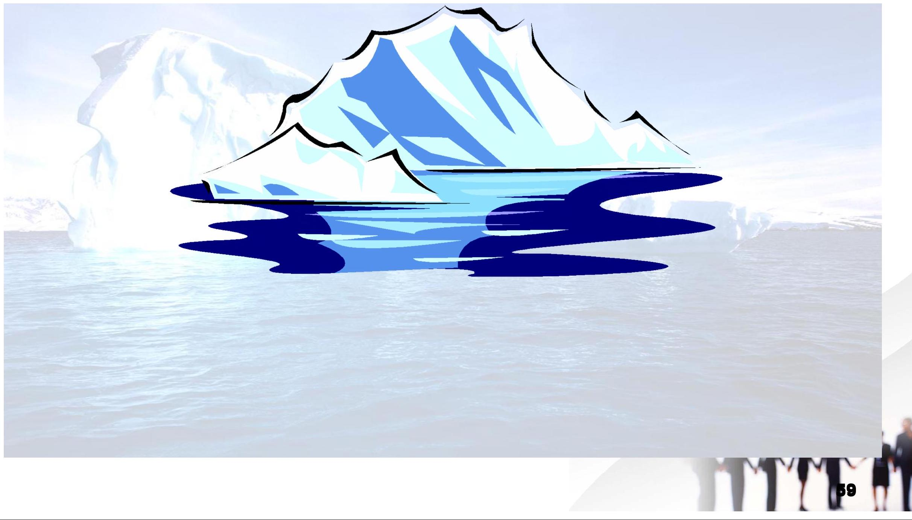
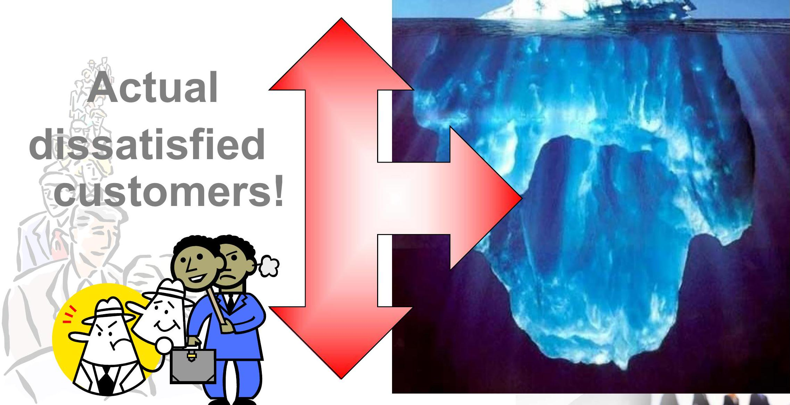

Handling Difficult Situations and Customer Satisfaction
Dealing with Difficult Customers
A typical dissatisfied customer will tell eight to 10 people about his or her experience. One in five will tell 20 or more.
There is a book by Pete Blackshaw titled, "satisfied customers tell 3 friends, Angry customers tell 3000.
In this age of social media like Face book, blogs, websites, consumer review websites etc, you don't want to piss off a customer.
Identify who the difficult customers are
- Shouting and Yelling customers
- Angry customers
- Uncooperative customers
- Tardy customers who will always come in late
- Disobedient customerswho will never follow instructions
- customers who always forget their appointments
- Unhappy customers- "vicoden patients"
- customers who are lying.
- customers who don't know what they want.
- customers who are never impressed.
know how to deal with them
There is no one size fit all way to deal with Difficult Guests.
The way out is to know the causes of their anger. Know why Grandpa is so mad with you.
causes of dissatisfaction
- Expectations not met e.g. "I had been told... but that is not what I got"
- Someone was rude to customer: not you don't have to be rude, customer only have to perceive!
- Someone was indifferent e.g.. "I don't know I just work here" " that is our policy" "sorry I cant help you" "sorry its not my fault" note not only words but attitude!
- No one listened:- "what is your name?- Ken Barnes. Your first name? Ken, your last name? Barnes, is that your full name?
- Making a customer feel he or she is stupid-" you should know we were closed when you called" "You are not making sense"
- Your inefficiencies- customers feel you are wasting their time.
- Use of emotional triggers
turning difficult customers around
The situations of difficult customers incude:
- You don't know the answer to a customer's question.
- You have to say no to a customer's request.
- Your computer is working slowly and the customer is getting impatient.
- The customer makes an unrealistic request.
- The customers doesn't seem to believe you.
- The customer is angry.
- The customer doesn't want to give you the information you need.
ways of dealing with difficult customers
- You don't know the answer to a customer's question (Tell the customer that you don't know the answer, but you will find out)
- You have to say no to a customer's request (Explain why you have to say no; offer alternatives)
- Your computer is working slowly and the customer is getting impatient (Tell the customer your computer is working slowly; keep the customer informed about what's happening).
- The customer makes an unrealistic reqqes
- The customers doesn't seem to believe you (Offer to show proof or backup information)
- The customer is angry (Stay calm; acknowledge the customer's feelings)
- The customer doesn't want to give you the information you need (Explain why you need the information)
what to do
- Stay Calm - Tell yourself nothing will make u mad.
- Let the Customer Vent-Let the customer know you are listening, you can take down notes.
- Shows you care.-Thank the customer for bringing the situation to your attention.
- Deal with Emotions first- show empathy-"I will be upset too if someone did that to me", "I know how you feel Mr. Barnes, calling that many times and nobody getting back to you!"
- Delay action or consult a second opinion-" Mr. Barnes, want to give you the best resolution to this matter, can you give me a little time to look into this for a few minutes?"
- Avoid Emotional Triggers -(will discuss that in detipils)
emotional triggers and calmers
Triggers
- Sorry sir, but that is our policy
- Sorry, I can't do that!
- Sorry, I don't understand, you are not making sense
- No Sir, I don't know
- You should have known or asked
- The only thing we can do
- Look lady, you cant use that language here
Calmers
- Sir, Here is what we can do
- Can we do it this other way
- Is it okay if you explained it again
- I can find out for you
- What others have found helpful in the past is to
- A good option is for us to
- Hello ma'am I want to help resolve this issue can we go to work on that
- What Can I do to make
customer recovery skills
- Acknowledge the situation and discomfort
- Apologize for the discomfort
- Accept the responsibility for helping the customer.
- Adjust to solve the problem, solve the problem quickly, delaying too long will aggravate the situation.
- Assure the problem has been solved
- Thank them for coming to you and please hear them out sincerely and with great empathy
- Involve the Customer-Find out what is most useful to them not what is easiest to you!
- Do Something Extra- an appeasement gift, a gift certificate, free something, a glass of wine, movie ticket etc
- Follow up
Methods for Assessing Customer Satisfaction

Received complaints may reflect only the "Tip of the Iceberg"

Complain
